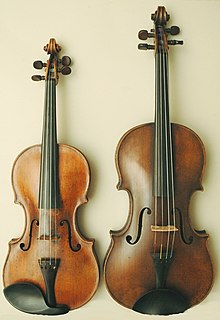
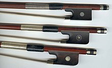
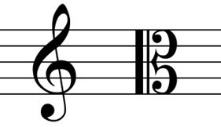
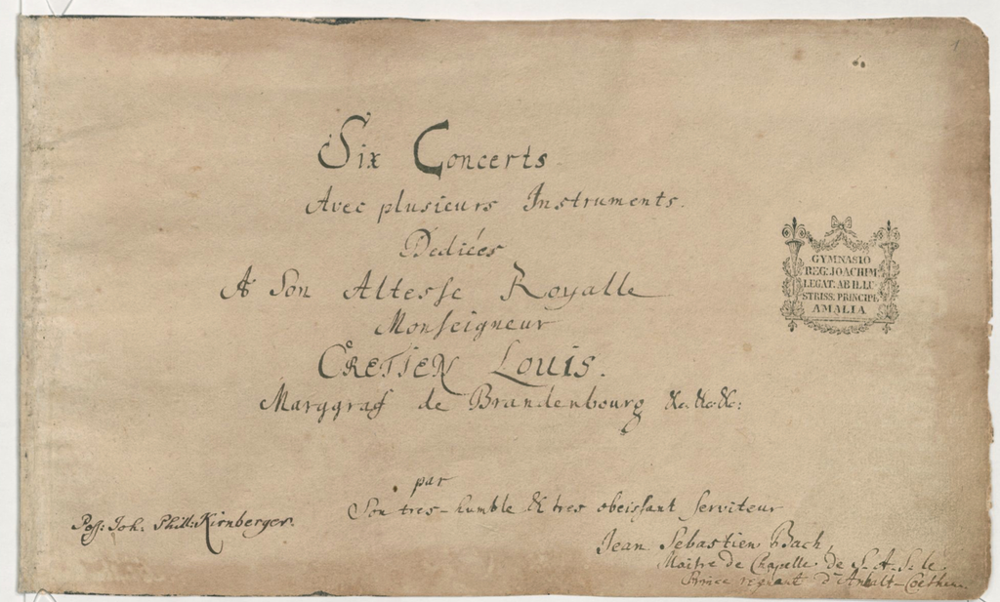
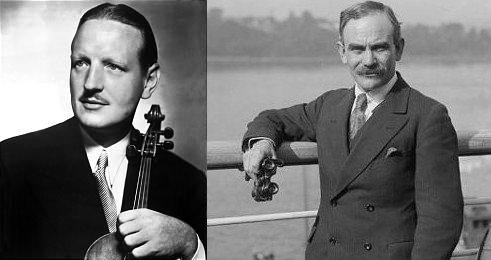

Praticamente todos os violistas, quando falam sobre seu instrumento, recebem a mesma pergunta; O que é uma viola? Ou, no caso do Brasil, há a necessidade de explicar que estamos falando de uma viola de arco, e não a caipira. Não é incomum que as pessoas não saibam nem que o instrumento exista, ou, quando sabem da sua existência, só a conheçam como um “violino grande”.
Apesar das muitas similaridades, existem diferenças importantes entre o violino e a viola, que destacamos a seguir
Tamanho: a viola é, sim, um “violino grande”. O violino tem, em média, 35,5 cm, enquanto que a viola costuma ter ao redor de 42 cm.
Som: Devido ao tamanho, a viola produz um som mais grave, e mais “macio”, em comparação com o violino, que tende a ser mais vibrante.
Postura: Os dois instrumentos são tocados de modo semelhante, segurados pelo ombro e queixo. A única diferença é a posição dos dedos da mão esquerda, que são mais espaçados na viola.
Arco: Como mencionado no ponto anterior, o arco da viola é mais pesado que o do violino; O arco de violino pesa cerca de 60 g, enquanto que o de viola pesa ao redor de 74 g. O formato do talão também é diferente, sendo quadrado no violino e arredondado na viola.
Afinação: A viola produz tons mais graves que o violino, e sua afinação reflete isso. As três cordas mais agudas da viola são iguais às três cordas mais graves do violino, porém a corda mi aguda é substituída por uma dó grave. Assim, a viola possui a mesma afinação Dó-Sol-Ré-Lá de um violoncelo, porém uma oitava acima deste. As cordas da viola também são mais grossas que as do violino, necessitando de mais peso no arco para serem tocadas.
Partituras: Partituras de violino são escritas quase que exclusivamente em clave de sol, enquanto que a viola é um dos poucos instrumentos que faz uso da clave de dó. Em trechos com muitas notas agudas, é comum a notação utilizar clave de sol para melhorar a leitura.
O protagonismo da viola em tempos modernos
Em composições orquestrais mais antigas, a viola geralmente apresentava um papel limitado, tendo trechos majoritariamente harmônicos, ou de acompanhamento. Nos casos incomuns de a viola apresentar um trecho melódico, este geralmente era apenas repetindo o que era tocado por outro instrumento.
Este quadro começou a mudar com composições de Johann Sebastian Bach, iniciando-se com os Concertos de Brandemburgo, que apresentam trechos com protagonismo da viola, e requerem destreza pouco observada em composições anteriores de viola. Muitas peças focadas em violas foram então produzidas nos períodos Barroco e Clássico, como aqueles compostos por Telemann, Hoffmeister, Stamitz, que ainda fazem parte do repertório esperado de violistas profissionais até os dias de hoje.
Este maior destaque para o instrumento continuou através dos séculos XX e XXI, com a presença de muitos violistas especializados e composições centradas no instrumento. Dois dos principais nomes em tempos modernos são Lionel Tertis e William Primrose.
O Concerto para Viola de Carl Stamitz é uma peça infame entre violistas, sendo muito comumente associada à testes e audições. De um ponto de vista mais neutro, porém, é uma peça vivaz, que demonstra toda a capacidade sonora de uma viola, desde os tons mais graves até os mais agudos
Uma das poucas composições de Stamitz que ainda são performadas hoje, o Concerto é parte integral do repertório de violistas, e é capaz de demonstrar toda a virtuosidade dos mesmos, devido aos diversos trechos extremamente técnicos presentes em toda a obra.
O Concerto em Sol Maior de Telemann
Entre as 900 e poucas composições de Georg Philipp Telemann, o Concerto para Viola em Sol é um de seus mais conhecidos. É o concerto mais antigo para viola que conhecemos hoje, tendo sido escrito circa 1716-1721, sendo um dos principais trabalhos a estabelecer a viola como instrumento de solo e promover o desenvolvimento de violistas dedicados ao instrumento.
Diferentemente do mais usual no período e em épocas posteriores, a peça é escrita seguindo o padrão das sonata de chiesa, com quatro movimentos alternando entre lentos e rápidos. Também é comum a presença de padrões ritornello, com a orquestra tocando trechos que são respondidos pelo solista em seguida.
Cuidando de sua Viola
Assim como qualquer outro instrumento, a manutenção da viola é um aspecto importante para manter uma boa qualidade de som. Alguns cuidados pequenos podem fazer uma grande diferença na longevidade e qualidade de seu instrumento.
Temperatura: Procure sempre deixar sua viola em locais com temperatura amena. Tanto calor quanto frio intensos podem danificar a madeira.
Cavalete: Tenha o hábito de verificar seu cavalete de vez em quando após tocar. Esta peça é frágil e é essencial que ela esteja apoiada firmemente no corpo da viola, em posição vertical.
Arco: Sempre lembre-se de desafrouxar o arco após tocar. Deixar o mesmo apertado por longos períodos pode torcer a madeira e diminuir consideravelmente a longevidade do arco.
Cordas: Procure trocar as cordas, no mínimo, uma vez por ano. Além dos problemas no tom, cordas velhas podem eventualmente arrebentar, sendo potencialmente perigosas.
Limpeza: Lave as mãos antes de tocar, e procure sempre passar um pano em sua viola e nas cordas, para remover o excesso de breu que pode se acumular.
{kind=link}
{kind=link}
{kind=link}